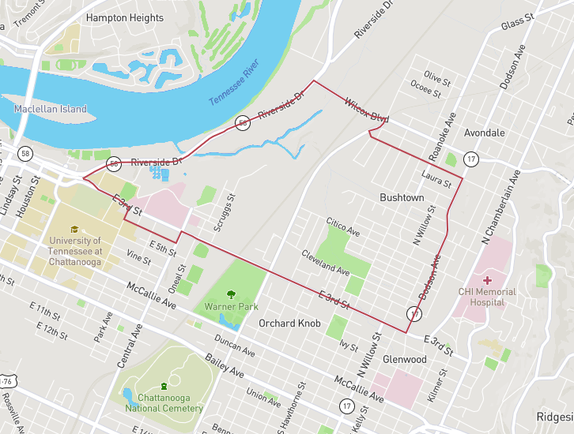

Built on ground with a history worth knowing
Established in 2017, The Community Haven sits on a 5-acre site at 815 North Hickory Street — once the St. Francis Catholic School for African Americans, later the Tennessee Correctional Workhouse, and later still the 28th Legislative District Community Development Corporation, which closed in 2012.
A legacy given a future
According to a 19th-century news account, Bushtown was the first Black incorporated township in the United States. Since 2015, The Community Haven has worked to give that legacy a future — through education support, workforce development, and affordable products and services for the neighborhood.
The gap we exist to close
Bushtown's poverty rate runs well above the national average — and that gap is the reason The Community Haven exists.
11,000 homes, one block at a time
That's the scale of the neighborhood we work in, per 2021 Census data — and why the work has to happen house by house.
More than a quarter, below the line
Of Bushtown households living below the poverty level — the number that shapes every program on this page.